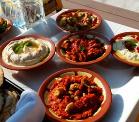
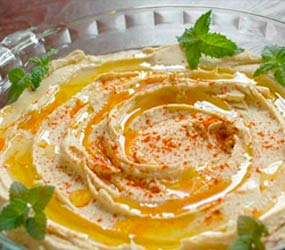
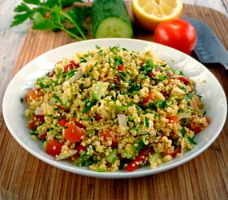
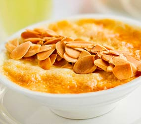

Gatronomia Tradicional de dubai
En Dubái las costumbres culinarias provienen de la fusión de la cocina Siria y de Lebanon fundamentalmente, aunque también han adoptado matices de la cocina iraní, dada la gran inmigración de habitantes de esta región a lo largo de la historia de Dubái.
En Dubái las costumbres culinarias provienen de la fusión de la cocina Siria y de Lebanon fundamentalmente, aunque también han adoptado matices de la cocina iraní, dada la gran inmigración de habitantes de esta región a lo largo de la historia de Dubái.
Vale mencionar que el desayuno se toma muy temprano, a las 7.00hs, y el siguiente plato importante en la cultura dubaití es la cena, que se toma a eso de las 20.30hs.
Platos tipicos de Dubai
La cocina de Dubái incluye muchísimas verduras, carnes rojas (a excepción de la carne de cerdo cuyo consumo está prohibido) y blancas y se caracteriza por hacer un buen uso de diversos condimentos, lo que aporta a sus platos aromas y sabores auténticos e inolvidables. Debido a la gran mezcla cultural de Dubái, en algunos restaurantes se puede conseguir carne de cerdo, aunque normalmente ésta es de mala calidad.
EL MEZZE
Uno de los platos más típicos en cualquier menú dubaití es el Mezze, un plato que se sirve a modo de picoteo, aunque es sumamente abundante. Existen diversos tipos de mezze dependiendo de las particularidades de cada restaurante. En algunos restaurantes el mezze consiste en un gran plato con trozos de carne con verdura, ensaladas y snaks de diferentes sabores; en otros sitios, también suele agregarse una abundante cantidad de queso cortado en cuadraditos. Cabe mencionar que es un plato que puede servirse tanto frío como caliente.
HUMMUS
El hummus es, seguramente, uno de los platos autóctonos y más populares de Dubái; se trata de una crema de garbanzos a la que se le añade aceite de oliva, sal y sésamo y que se toma fría. Generalmente acompañada de snacks o pan de pita.
TABBOULEH
Si eres un amante de las ensaladas coloridas no debes perderte el Tabbouleh, un plato que se prepara con sémola, perejil, lechuga, hierbas aromáticas, tomate, limón y aceite de oliva y que suele ser sumamente refrescante para los días de calor.
Postres tipicos de Dubai
ENSALADA DE FRUTAS

En lo que respecta a los postres, el más popular de la ciudad de Dubái es la ensalada de frutas. Hay tantas exóticas y exquisitas frutas en esta ciudad y es tal el calor que hace, que después de una buena comida suele ser lo que más apetece y lo que más se consume. No obstante, también Dubái tiene fama de ser un sitio con dulces deliciosos, aquí te presentamos tres que son una maravilla de la cocina dubaití.
LE-GE-MATT

Los Le-ge-matt son unos exquisitos buñuelos que se preparan con leche, sal, yogurt frito y se cubren con miel. Suelen servirse con el café árabe o después de la comida.
UMM ALI
Otros exquisitos pasteles se conocen con el nombre de Umm Ali que consisten en una masa de hojaldre y almendras que se cocina y que se sirve caliente. Suele consumirse sobretodo en invierno, cuando las temperaturas son más suaves.
Bebidas tipicas de Dubai
CAFÉ ESTILO ÁRABE

El café árabe también es muy tradicional en Dubái. De hecho, su preparación consiste en un ritual diario sumamente atractivo a la vista: en muchos restaurantes podrás observar cómo se hace. Esta bebida suele acompañarse de masas dulces.
CHAI ZANJABEEL

El Chai Zanjabeel (té de jengibre) es otra de las bebidas que suelen servirse en Dubái y si eres de esas personas a las que les interesa probar todas las infusiones del mundo, no deberías perdértela.
BEBIDAS ALCOHOLICAS

El alcohol no es muy popular entre la comunidad árabe, aunque en cualquier restaurante de vayas a comer podrás pedir tu botella de vino o tu cerveza sin problemas. En lo que respecta a tomarte una copa por la tardecita, podrás encontrar diversos bares donde sin problemas te servirán lo que pidas.